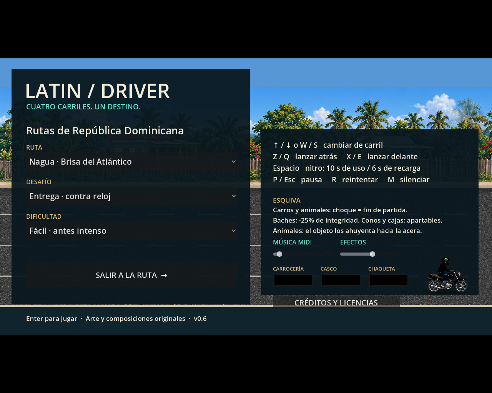

Nagua
Brisa del Atlántico
GODOT 4.7.1 · C# · PORTFOLIO BUILD
A fast 2D road runner inspired by the color, rhythm, and hazards of Dominican roads.

THE GAME
Pick a destination, choose the pressure, and make the road yours. LATINDRIVER combines lane changes, jumps, throws, nitro, and split-second decisions into a compact arcade loop.
The latest Linux build was launched under a real X display compatibility renderer and verified during a 12-second runtime window.
ROUTES
From coastal villages to dense city streets, each route gives the same four-lane loop a different rhythm.
Brisa del Atlántico
Stone, shade, traffic
More lanes, less time
Open road, high speed
ON THE ROAD
READY?